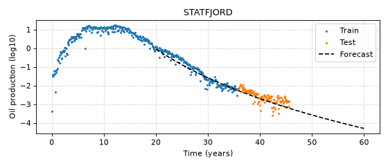

AutoDCA
Introduction
User Guide
Installation
Methodology
Developer documentation
AutoDCA
decline-curve-analysis
View page source
decline-curve-analysis
(
Source
code
,
png
,
hires.png
,
pdf
)

Introduction
User Guide
The DCA package
The ADCA package
ADCA tutorial
ADCA FAQ
Installation
If you are a user
If you are a developer
Methodology
Theory
Results
Assumptions
Limitations
Uncertainties
Guidelines
Links and references
Developer documentation
DCA - API
DCA - Examples
DCA - Technical report